What is on this Website
This is a collection of all of my computer programming projects, ranging from animations to simulations to games. Some of the projects on this website are very early-stage prototypes, while others are nearly completely finished games. Through this, the progression of my coding experience, both the visual and programmatic, are present in a fun, enjoyable way!
In the beginning, my projects were made without using any game engines, my main languages being JavaScript and Python. I quite enjoy the blank slate feel of using pure languages, as then I can comform the specific sections of the engine to exactly what I need for the game I am creating. However, more recently I have also began trying and testing out making games in engines such as Unity and Bevy, and would like to make a full, complete game in the program someday in the near future!
The majority of the projects are presented in the order in which they were made (an exception is with the JavaScript Fishing Games, which were serveral-year projects, and ones I went back to many times). Scroll through the programs that I have created throughout my coding experience!
JavaScript Fishing Games
I first learned how to code in the languages of HTML, CSS, and JavaScript. Being amazed by the functions and capabilities of JavaScript, I immediately was inspired work on creating my first game.
I had a dream game in mind — a fishing game. Using HTMLCanvas (a two-dimensional rendering screen built into HTML), I started at making my first games. In retrospect, creating a fishing game was quite a large first challenge, yet nevertheless I learned many great game development skills and techniques, and made some fun games in the end!
A forewarning, however, as these games were made near the start of my game development hobby, they can be buggy at times! If something goes wrong, try refreshing — it seems to fix many of the issues.
Note - the filter: blur() functionality is not
supported in Safari. Although a minimal change, for
best visuals, use a different browser.
-
Fishing Game 1
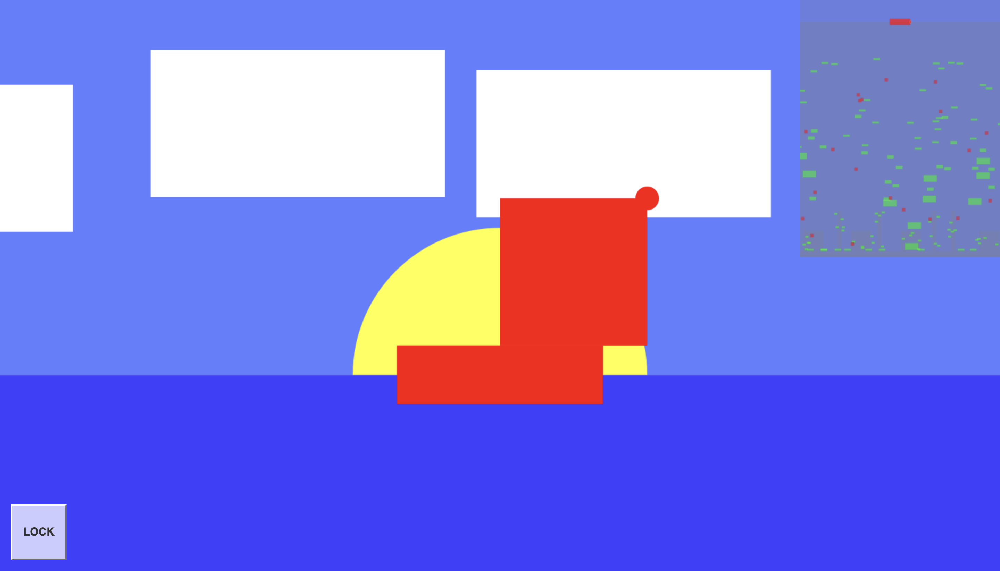
The first game I have ever created, did not turn out too bad! It still is not very playable or fun, and is loaded with bugs, yet a fairly decent starting point to my game development journey!
-
Fishing Game 2
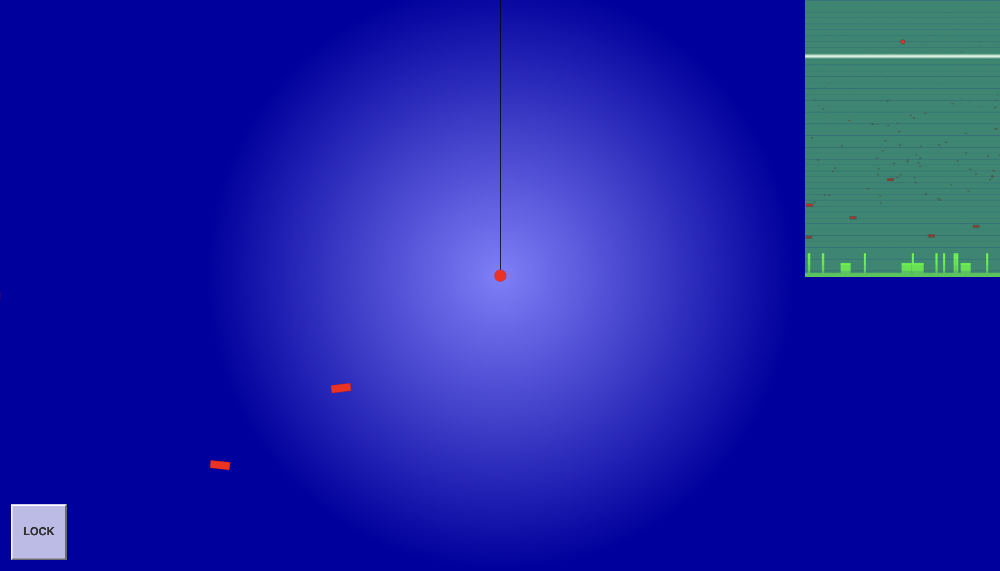
The second attempt at a fishing game, which did not go much better than the first. I took a focus towards the underwater gameplay, yet it still is pretty much the same. The map looks cooler, though!
-
Fishing Game 3
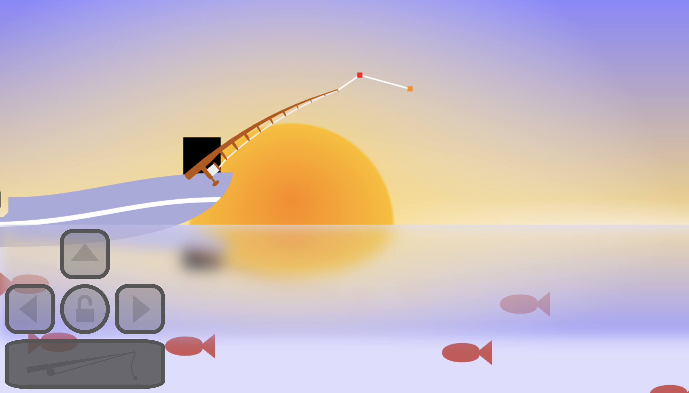
The third attempt at a fishing game, which I made a little while after the first two. As I learned more about coding between this time, this game turned out much better. It is actually playable!
-
Fishing Game 4
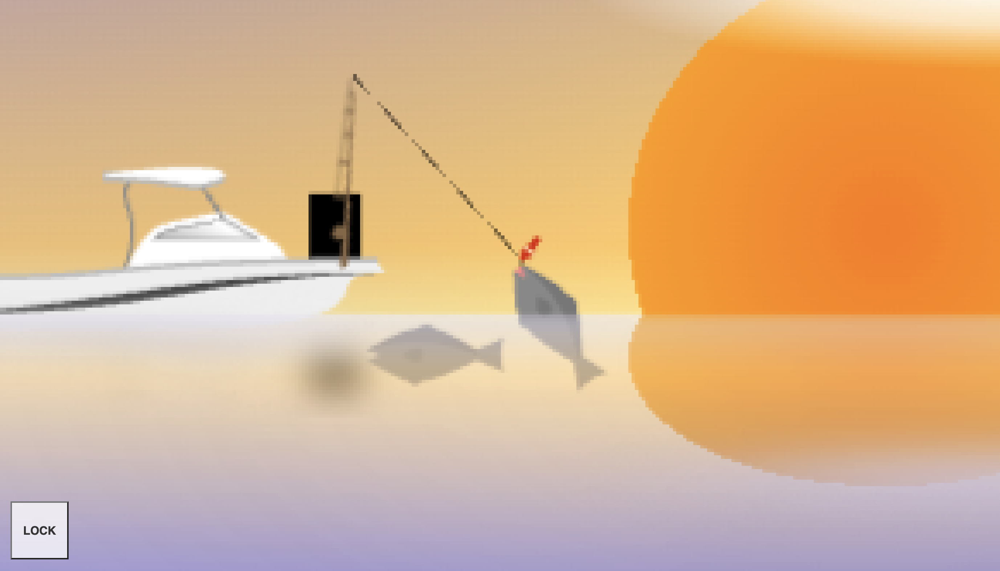
The forth attempt at a fishing game, which I made shortly after the third attmept. I went for a retro, pixelated style this time. This one turned out the best by far, and is both visually pleasing and actually fun to play!
Python Minigames
During my years at school, I both entered and ran a Computer Programming Club, where I learned and taught Python. As Python is written more closely to English than JavaScript, it is a simpler first programming language for many beginner coders. I experimented a lot with the language, creating games spanning from beginner-friendly to complex.
I used the Turtle library to create the graphics in my games. In some ways, this was simpler as it was more beginner-friendly. However, it was also more limited in its functionality than HTMLCanvas for this same reason. Although my final projects are likely not as impressive or large-scale than my JavaScript projects, learning another language has helped me see different ways to create games, and made me a better game developer!
The Python games are run using Trinket.io.
Note - due to limitations, the games run are largely not compatible with mobile users.
-
Pong
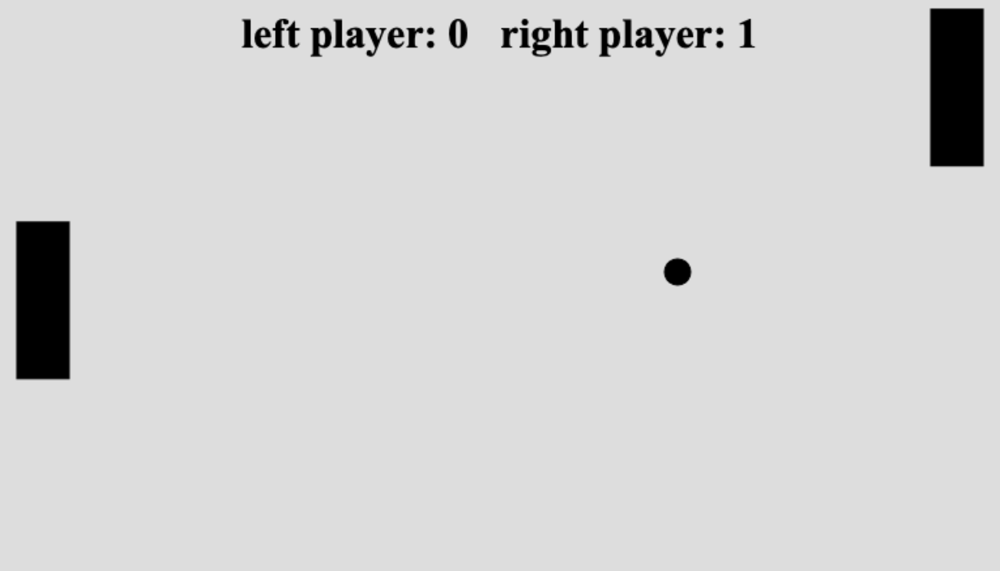
A recreation of the classic game 'Pong'. It was the first ever semi-complete game I created in Python, and for that reason it is filled with bugs and glitches.
-
Snake
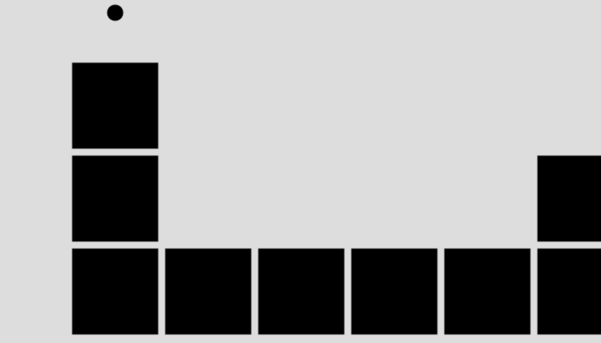
A recreation of the classic game 'Snake'. This game turned out a lot better than the first Python game, and actually plays quite similarly to the real game.
-
Tetris
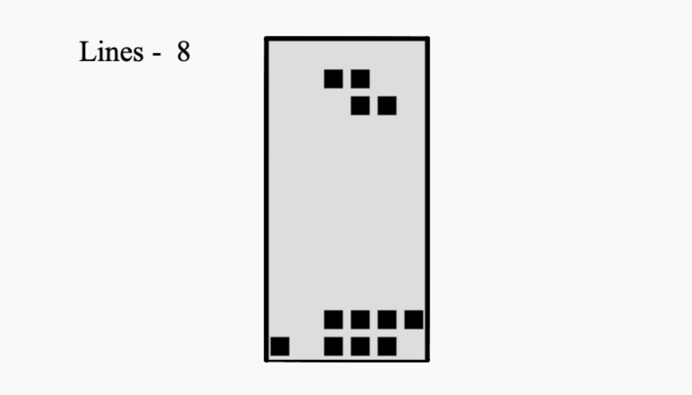
A recreation of the classic game 'Tetris'. This turned out a lot more complex than the previous two games, and therefore I faced a lot more bugs and issues in the development stage.
-
Racing Game
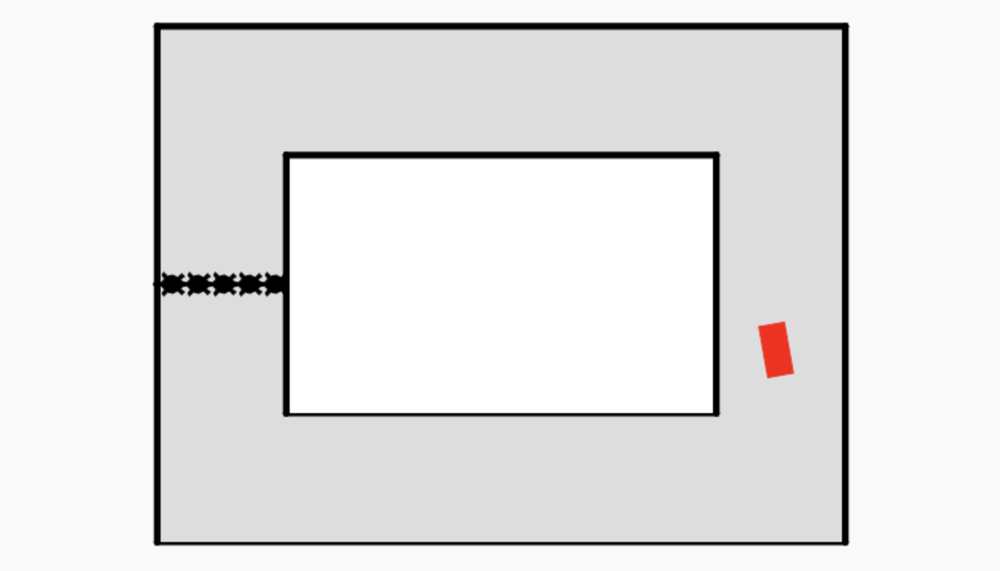
A basic racing game, where the objective is to go around the track in the least amount of time. Although being quite a simple game, it is quite fun to play as well! Try to go faster than my high score of 195!
-
Pixel Drawer
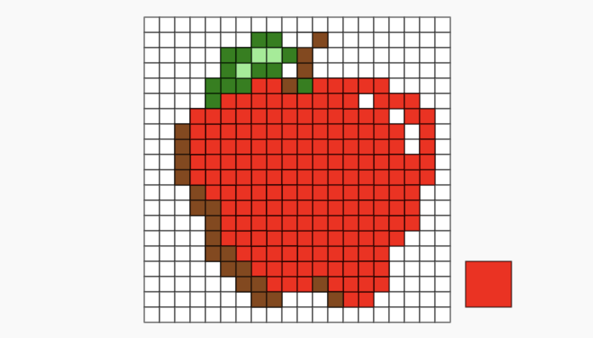
A pixel drawing editor, where you can draw pixel art. Due to problems I ran into with the
input()function, I had to restrict the amount of colors that you can choose from, yet nonetheless it is fun to use! -
Hangman
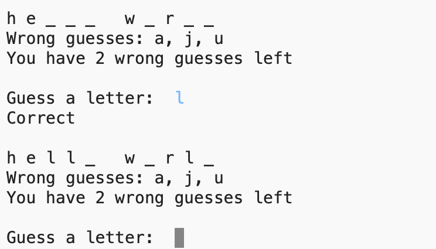
A recreation of the game 'Hangman'. As a change from using Turtle for the graphics, I decided for this game to try using the console instead, which I enjoyed very much, and continued for my next projects.
-
Last Card (UNO)
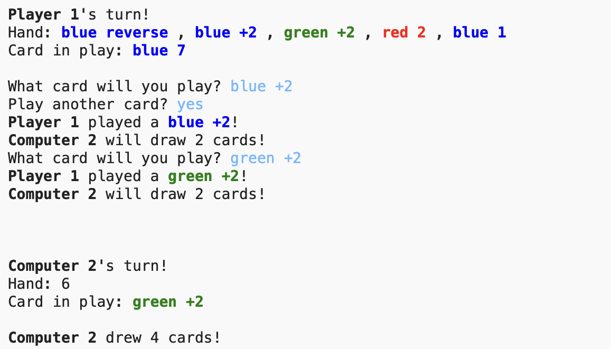
A recreation of the game 'UNO'. This was the hardest game I made in Python, as there were so many conditions and iterations I had to conduct, as well adding the computers' logic was difficult.
-
Tic Tac Toe
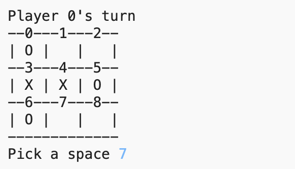
A recreation of the game 'Tic Tac Toe', where you play against a computer. While the game itself is quite simple, programming the computer to try and make the best move was a good exercise.
CSS Projects
Although I learned HTML, CSS, and JS all at the same time, I put all of my focus for game development into JavaScript. Through the years I saw other people's CSS projects, and thought that I should also try to improve my skills in the language.
As well, many of my game projects at the time were lacking in visual appeal. For this reason, I thought that I may be able to improve this by using CSS. In the end, however, CSS turned out to be too computer-expensive to use as I wanted in game development. Nonetheless, the skills I was able to create in the language was of great help when using CSS for format, texual, and input elements in my later JavaScript projects!
-
Fishing
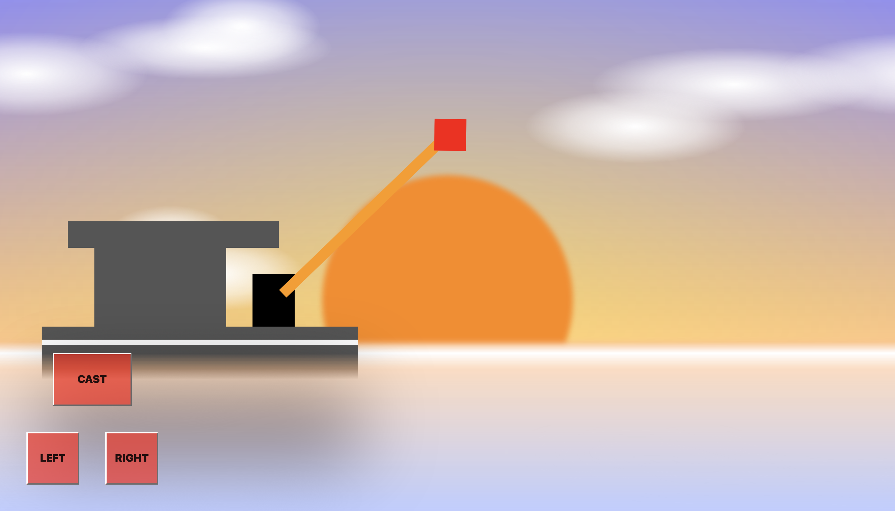
A fishing game I tried making in CSS instead of JavaScript. Although it looks fairly decent graphically, its performance is very poor.
This program is computer heavy. Do not open if on a slow device.
-
Tree Generator
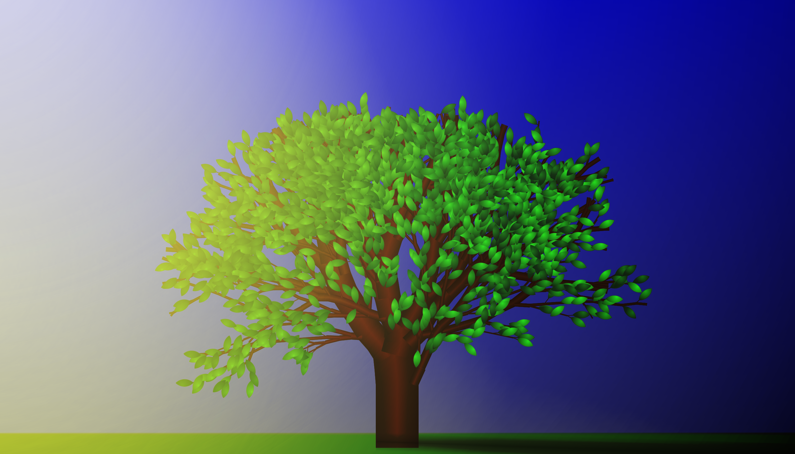
A tree generator and animation program that creates a random tree on every load. Although it looks quite nice, I later remade this program in JavaScript to improve performance, which I am more proud of.
This program is computer heavy. Do not open if on a slow device.
-
Helicopter
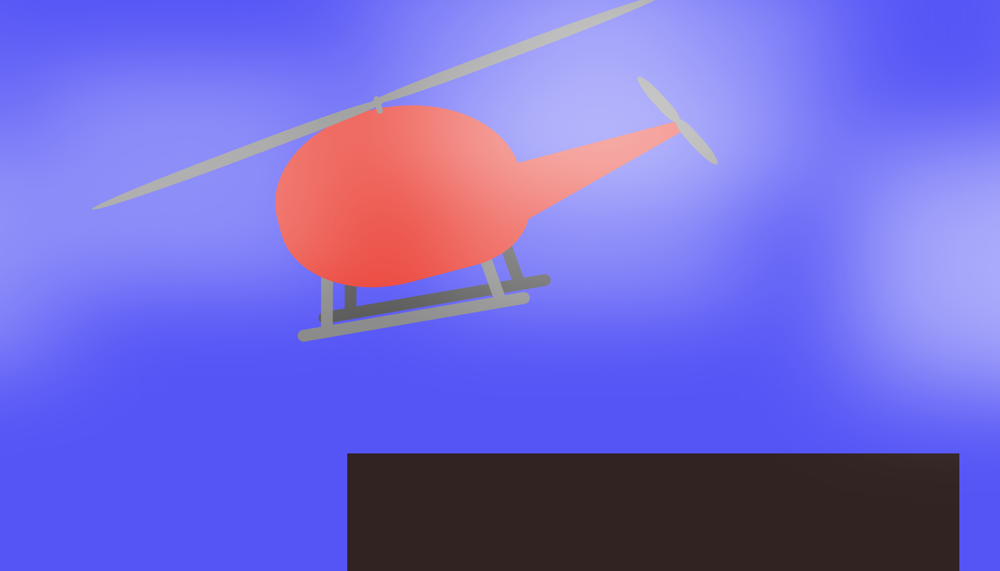
A simple animation of a helicopter taking off and landing on a building. It scrolls through the day, going from daytime to nighttime. It is quite nice just to let play and watch!
-
This Website!
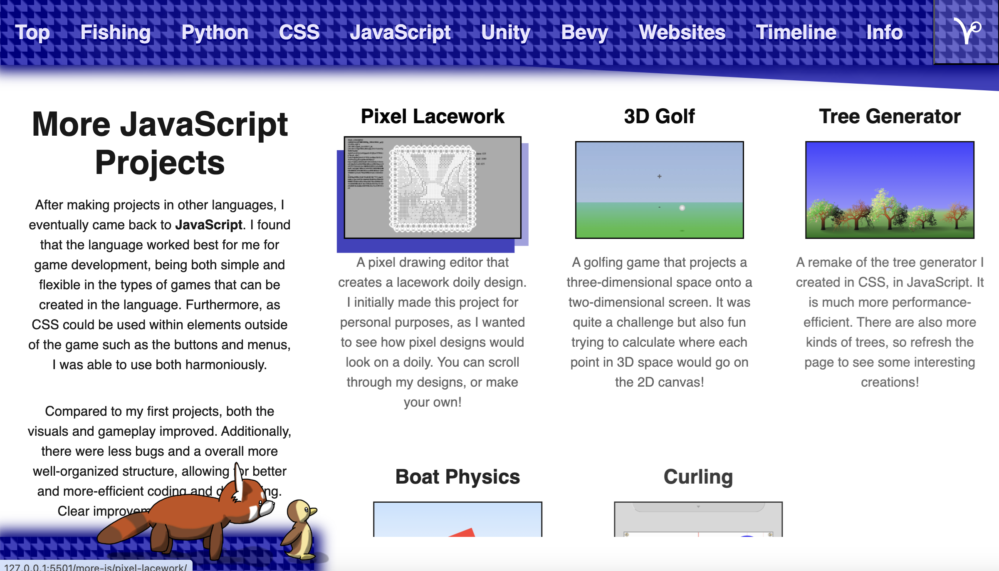
This website that I created to assemble all of my old projects! I learned quite a lot while making this, as it was the first website I have ever made, and had to work with concepts such as responsiveness and semantics.
More JavaScript Projects
After making projects in other languages, I eventually came back to JavaScript. I found that the language worked best for me for game development, being both simple and flexible in the types of games that can be created in the language. Furthermore, as CSS could be used within elements outside of the game such as the buttons and menus, I was able to use both harmoniously.
Compared to my first projects, both the visuals and gameplay improved. Additionally, there were less bugs and a overall more well-organized structure, allowing for better and more-efficient coding and debugging. Clear improvement over the years!
-
Pixel Lacework
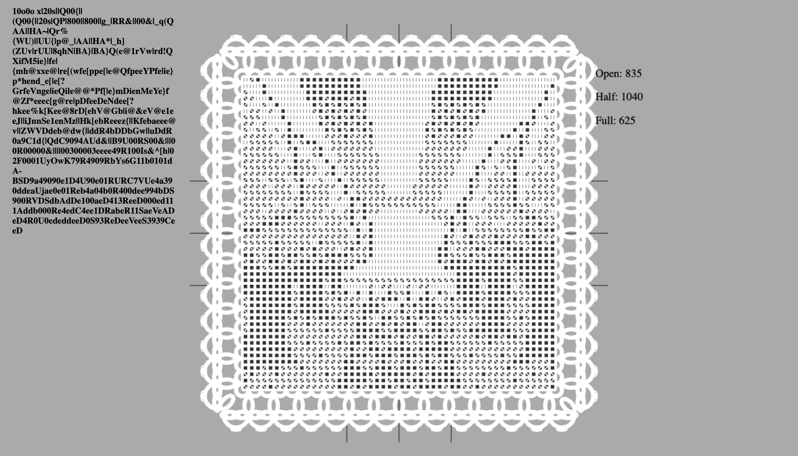
A pixel drawing editor that creates a lacework doily design. I initially made this project for personal purposes, as I wanted to see how pixel designs would look on a doily. You can scroll through my designs, or make your own!
-
3D Golf
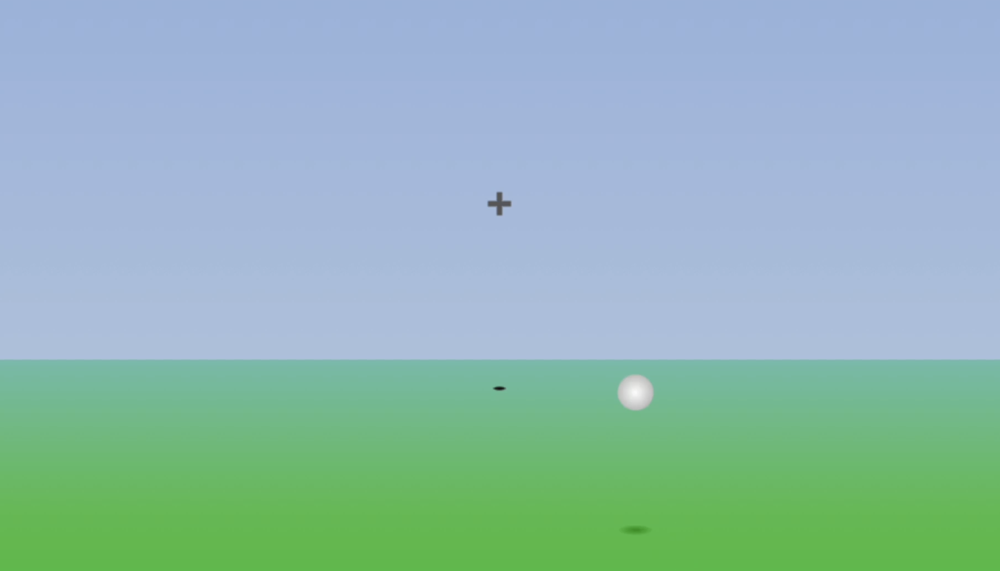
A golfing game that projects a three-dimensional space onto a two-dimensional screen. It was quite a challenge but also fun trying to calculate where each point in 3D space would go on the 2D canvas!
-
Tree Generator
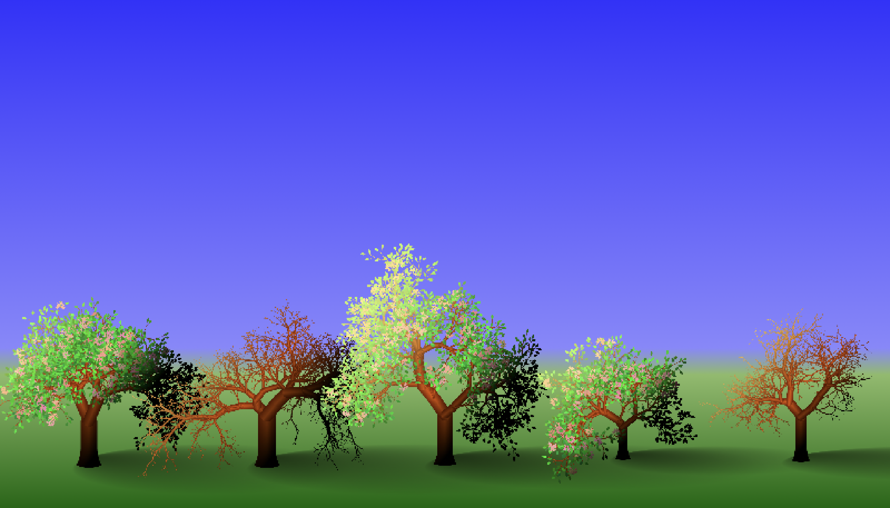
A remake of the tree generator I created in CSS, in JavaScript. It is much more performance-efficient. There are also more kinds of trees, so refresh the page to see some interesting creations!
-
Boat Physics
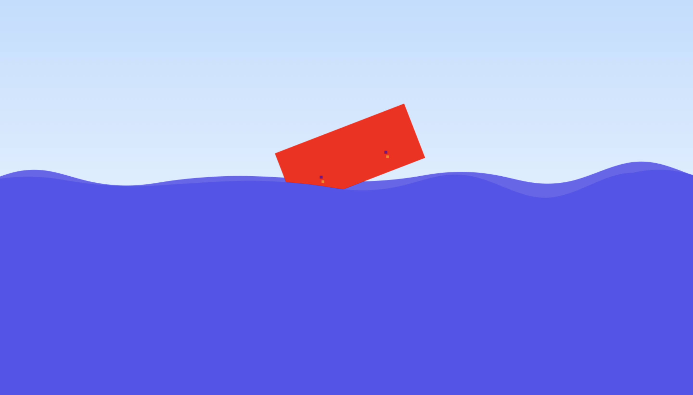
A simulation project I made for how a boat may move in harsh waters. Although it likely is not realistic, it has an artistic appearance, and definitely could be used in a full-scale game!
-
Curling
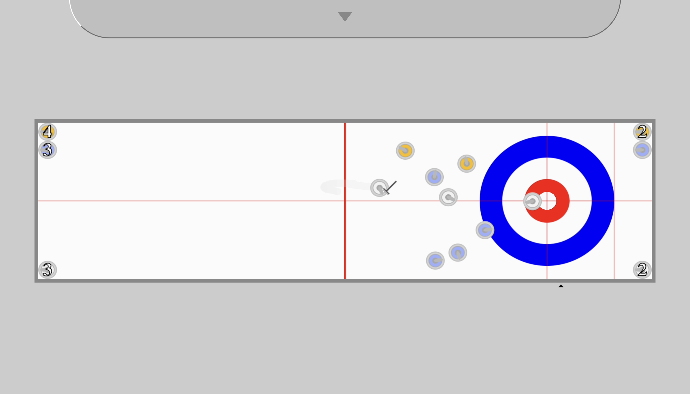
A game version of curling. When I would watch curling, I thought that it may be even more fun with greater than two teams on the ice, which is why I made this game up to eight players. It is really fun to play!
Unity Game Prototypes
Although before I had created my games without any game engines, I wanted to try out one. I chose Unity, as it seemed the most popular and beginner-friendly, as well C# (the language Unity uses) is quite similar to JavaScript in many areas.
With the higher power and built-in features, I went on to create an original game, which most of my other games were not. I had two ideas, both of which I created a prototype for. Although I am still in the development process and learning more about the engine, the game creation is going quite well. In the near future, I hope to finish these projects, and publish my first games!
Note - the Unity games are run using WebGL. This may be uncompatible for some mobile users.
-
Penguin Sliding Game
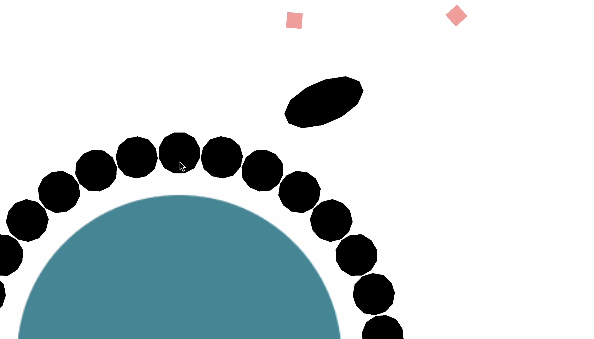
The first game prototype I created in Unity. The idea was to make a game where penguins slide and try to get as close to a target as possible, inspired by curling. I would love to finish this one day, and publish it as a full game!
-
Swimming Pollution 1
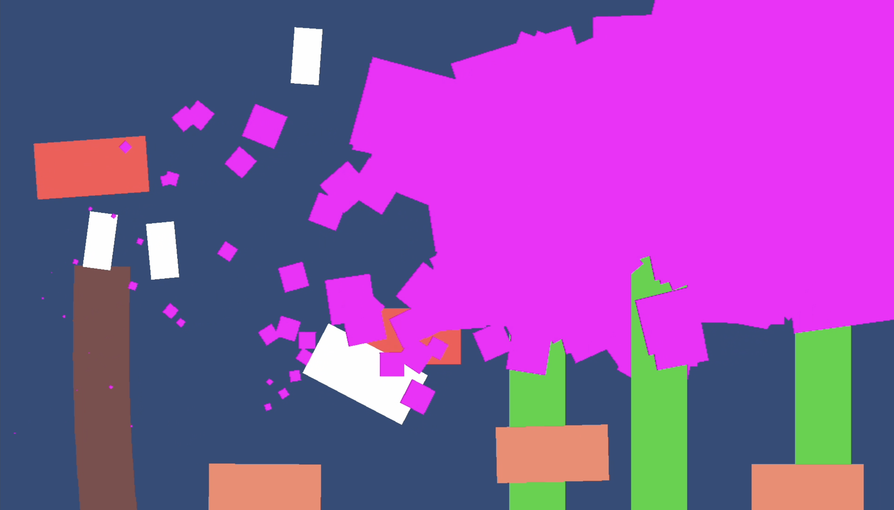
The second game prototype I created in Unity. The idea was to make the game about water pollution, where the player is collecting garbage that is causing harm to the aquatic wildlife. The potential is already present in the prototype, so I would love to finish this game!
As this game is in early prototype stage, it is not yet mobile-friendly.
-
Swimming Pollution 2
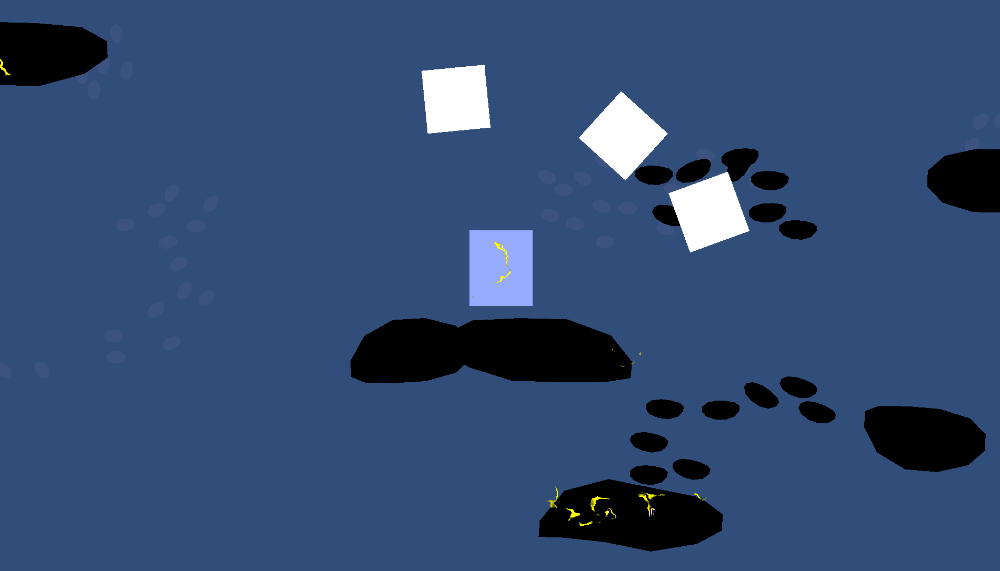
A prototype remake of the first Swimming Pollution game I made. The first prototype ended up getting difficult to manage, so I decided to start over. This time I focused on the graphical aspects of the game, which allowed me to gain some skills using shaders! I also did some experiments with boids, which was fun and helpful!
As this game is in early prototype stage, it is not yet mobile-friendly.
As I did not focus on the game aspect, the controls may be broken in places.
Bevy Projects
During my experiments using Unity and its Object Oriented Programming, I ran into a few problems regarding organization and structure. I had heard of a different type of programming, Data Oriented Programming, and wanted to try it out. I learned using the Bevy Engine, which uses Rust as its programming language. As I was not familiar with either, it was a great learning experience!
Overall, I prefered the structure of DOP over OOP, and plan to continue coding games in Bevy from this point on!
Note - the Bevy games are run using WASM.
Note - due to limitations, the games run are largely not compatible with mobile users.
-
Snake
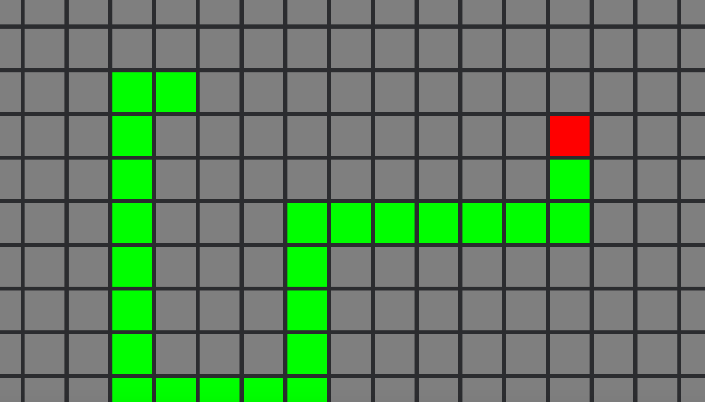
A basic recreation of the classic game 'Snake', which I created to get used to Bevy and Rust. Although it is quite simple, it was helpful with introducing me to Data Oriented Programming.
-
Ocean Shaders
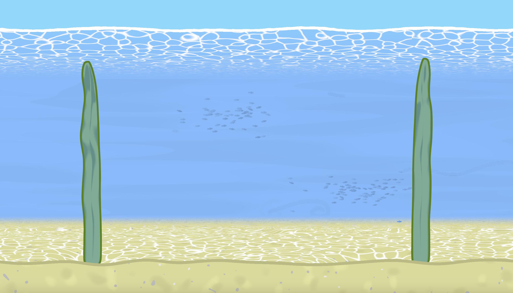
My experimentations with using shaders, in the bevy framework using WGPU and WGSL. A simple stylized, animating scene of an ocean, from the sky to the sand, with (stylized, not realistic) perspective and depth.
-
Pecko Pecko Combo
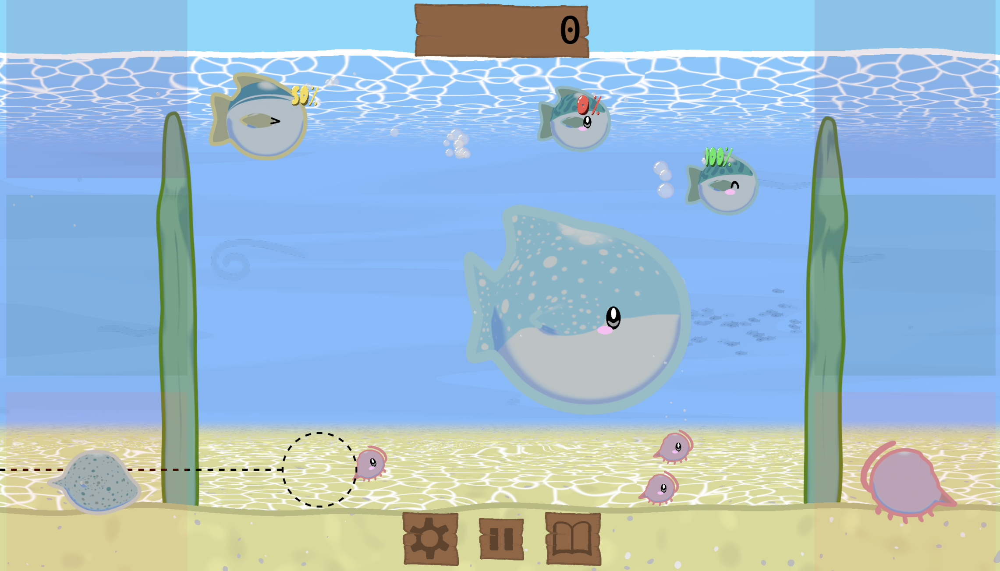
My (what I hope will be) first full game! While it's still in the prototype stage, it is definitely coming together. Starting from this game, I also made a personal game development brand — Sine Of T! I am running daily updates on my Instagram, so you can see how development is going.
this is an external link to my Instagram page.
Project Timeline
This is a timeline of all the programming events and experiences I have had, from first starting to today and beyond. It shows all of the languages, experimentations, projects, and learnings that I have worked with over the years. It also displays the order and times when I created my projects, allowing to see the progression of my game development and computer programming skills.
-
2020
HTML, CSS, & JS
In the spring of , near the start of the COVID-19 pandemic, is when I first began coding. I learned HTML, CSS, and JavaScript using both online lessons and interactive practice.
-
2020
JavaScript
In the summer of , after learning how to program, I took a liking towards JavaScript, as well found a passion for game development. I began working on a few large-scale games.
Projects made:
- Fishing Game 1
- Fishing Game 2
-
2021
Python
In early , I learned how to make games in Python in a school-run Computer Programming Club. In the club, I learned beginner level Python syntax and functions, as well how to use the Turtle library to draw graphics on the screen.
Projects made:
- Pong
- Snake
-
2021
Python
In the fall of , I became one of the leaders at the Computer Programming Club. Through this, I greatly increased the amount of games I created in Python. I also decided to try creating more complex games in the language.
Projects made:
- Tetris
- Racing Game
- Pixel Drawer
- Hangman
- Last Card (UNO)
- Tic Tac Toe
-
2021
CSS
In late , I started experimenting with making graphic-based animations and programs in CSS. Previously working largely with bland, rectangular elements as placeholders for sprites, I wanted to work on developing the visual aspect of my projects as well.
Projects made:
- CSS Fishing Game
- CSS Tree Generator
- Helicopter Animation
-
2022
JavaScript
In early , I went back to coding in JavaScript. Using the skills I developed over the two years, I created better, more organized, and more visually appealing programs and games.
Projects made:
- Pixel Lacework Drawer
- Fishing Game 3
- Fishing Game 4
- 3D Golf Game
- Tree Generator
- Boat Physics Simulation
- Curling
-
2022
Unity & C#
In the summer of , I started playing with the game engine Unity. I also learned C# in order to use Unity, where I was introduced to fully Object Oriented Programming, as well as a strongly typed language, both of which helped to improve my structure and organization.
Projects made:
- Penguin Sliding Game Prototype
- Swimming Pollution Game Prototypes
-
2023
HTML, CSS, & JS
In the spring of , I started making this website! Although I have known HTML, CSS, and JavaScript since the start, I have never used them to create a website before. I also got to assemble all of my old projects, which let me see my improvement over the years!
Projects made:
- This Website!
-
2023
Bevy & Rust
In the fall of , I started experimenting with the game engine Bevy. I also learned Rust in order to use Bevy, where I was working in a lower-level environment and dealing with references and borrowing, which helped to improve my understanding of machine systems.
Projects made:
- Bevy Snake
-
2024
Bevy Projects & Shaders
So far in , I have been making much more ambitious projects in Bevy. The largest one is called "Pecko Pecko Combo", and I plan on releasing it when it is finished to my new game development brand Sine Of T! Along the way, I also learned how to make shaders using Bevy's implementation of WGPU!.Through this, I specifically learned how to program in WGSL, but also how shaders work in a more abstract understanding.
Projects made:
- Ocean Shaders Demo
- Pecko Pecko Combo
What's Next
I am entering University from (planned) - for a degree in Computer Science, where I would like to continue creating, learning, and improving in my game development skills. As I learn about the principles and theory that underly computer science, I want to apply that into my own projects in order to create better, more exciting games. I am aiming to eventually create and finalize a game, and public it sometime soon!